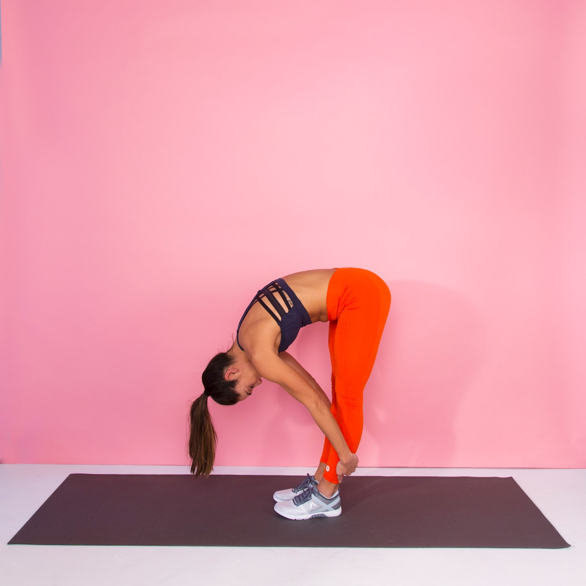

Stretches
Standing Hamstring Stretch

This type of stretch helps increase blood circulation, reduce muscle fatigue, as well as help reduce the risk of injury, it also helps improve your balance as well as increase stamina.
How do you do standing hamstring stretches?
- Stand tall with your feet hip-width apart, knees slightly bent, arms by your sides.
- Exhale as you bend forward at the hips, lowering your head toward floor, while keeping your head, neck and shoulders relaxed.
- Wrap your arms around backs of your legs and hold anywhere from 45 seconds to two minutes.
- Bend your knees and roll up when you're done.
Click here for the video tutorial
https://www.youtube.com/watch?v=tZLqLxmSjjU
What are the benefits of hamstring stretches?
- REDUCED BACK PAIN
- Back pain can be a symptom of ailments including muscle tightness and strains, fatigue and muscle weakness. Spine-Health, an online spine medical portal, suggests that performing hamstring stretches can reduce your back pain by lengthening the thigh muscles. Longer muscles relieve pressure on the lower back and ease your aching. Consult your health-care provider if you suffer from chronic back pain to determine if hamstring stretching is appropriate for your recovery.
- DECREASED SCIATICA
- Sciatica, the pain you feel running from your buttocks down the back of your leg, occurs when your sciatic nerve is compressed. Compression of the sciatic nerve can be a temporary problem caused by a one-time injury or a chronic medical condition stemming from a herniated lumbar disk. A herniated disk bulges out from the spinal column and puts pressure on the sciatic nerve. According to Spine-Health, hamstring stretches can lengthen and loosen the muscles, giving your body more support and less nerve compression. Hamstring exercises might alleviate the pain of a current case of sciatica and may even prevent future discomfort.
- REDUCED RISK OF INJURY
- Avid runners and other athletes are at risk for developing muscle strains and overuse injuries if they don’t warm up and stretch correctly before a workout. The American Academy of Family Physicians reports that hamstring muscle stretching may prevent overuse injuries, particularly those that affect the knee. The AAFP recommends stretching hamstrings before and after running to warm up and cool off and to reduce your risk of injury.